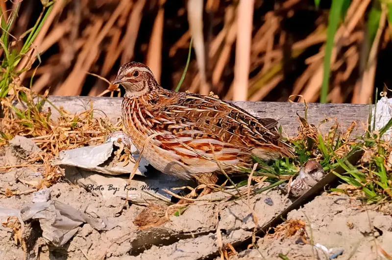

MiniFerma PS-Ovrea
Shpendi Fellenze:
Pamja Si zogj, si meshkujt, ashtu edhe femrat kanë të njëjtin lloj plumage dhe ngjyrosjeje. Kokat e tyre janë me ngjyrë të njomë, me njolla të vogla të zeza që hedhin zonën sipër sqepit. Krahët dhe pjesa e pasme e zogthës janë ngjyrë kafe të zbehtë, pjesa e pasme ka edhe katër vija kafe që ecin përgjatë gjatësisë së saj. Një shirit i zbehtë ngjyrë kafe të verdhë i rrethuar nga vija më të vogla të zeza shkon poshtë majës së kokës. Të dy të rriturit meshkuj dhe femra kanë plumage kryesisht kafe. Megjithatë, shenjat në fyt dhe gji, Thjerrëzat japoneze shumohen në Azinë Lindore dhe Qendrore, në zona të tilla si Mançuria, Siberia juglindore, Japonia veriore dhe Gadishulli Korean. Megjithatë, ato janë vërejtur gjithashtu të shumohen në disa rajone të Evropës, si dhe në Turqi. Këta janë kryesisht zogj që jetojnë në tokë që kanë tendencën të qëndrojnë brenda zonave të bimësisë së dendur për t'u mbuluar dhe për t'iu shmangur predacionit. Habitatet e tyre natyrore përfshijnë fushat me bar, shkurret përgjatë brigjeve të lumenjve dhe fushat bujqësore që janë mbjellë me të mbjella
Vezet e Fellenzes
fellenza japoneze eshte nje shpend i vogel qe ne menyre tersisht natrale prodhon veze me per berje shum t ushqyeshme dhe sheruse shekuj me radhe literatura kineze dhe japoneze ka cekur efekte pozitive dhe sheruse t cilat i kane vezet dhe mishi i fellenze japoneze vezet kane efekt specifikt fizilogjik per organizmin njeriut ,ne shtypjen e gjakut, ne gjak, ne zemer, ne melqi ,stomak dhe ne tru personat te cilet mund te perfitojn nga perdorimi i vezeve t fellenzes japoneze jane: femijet gjate zhvillimit te,te moshuarit,sportistet,punonjesit,personat qe sherohen nga ndonje semundje,personat ekspouar ndaj ngarkesave te ndryshem sic jan stresi,puna,puna fizike
| Calories: 14 | Protein: 1 gram | Carbs: 0 grams | Fiber: 0 grams | Choline: 4% of the Daily Value (DV) | Folate: 2% of the DV | Pantothenic acid: 3% of the DV | Vitamin B12: 6% of the DV | Iron: 2% of the DV |
|---|